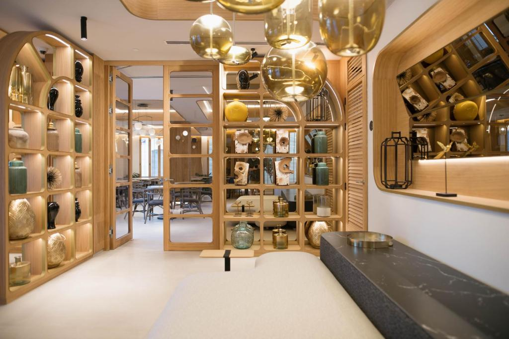

|
|
Hoteles de Valencia |
|  |
Las habitaciones disponen de aire acondicionado, escritorio, caja fuerte, TV de pantalla plana y baño privado con ducha. Todas las habitaciones del Hotel Puerta Serranos 4 sup están equipadas con ropa de cama y toallas. El establecimiento se encuentra a unos 600 metros de la iglesia de San Nicolás, a 1,6 km de la estación de tren Norte y a 4,8 km del puerto de Valencia. Nuestros clientes dicen que esta parte de Valencia es su favorita, según los comentarios independientes. |
Valoración 7 Recepción 24h ✓ |
|
Bet Apartments - Apartments Catedral Este establecimiento ofrece habitaciones y apartamentos elegantes con conexión WiFi gratuita y TV de pantalla plana vía satélite a 1 minuto a pie de la catedral de Valencia. La lonja de la Seda está a 500 metros. Terraza y balcón. Los jardines del Turia están a solo 300 metros. Wifi gratis |
Valoración 7.2 Servicios limpieza a diario ✓ |
|

|
WiFi gratuita, aire acondicionado, salón compartido y zona de barbacoa en Valencia, a 1 km del mercado central de Valencia y a 1,4 km de la basílica de la Virgen de los Desamparados. El alojamiento alberga un centro de bienestar y spa compartido con sauna y bañera de hidromasaje. Adaptado personas de movilidad reducida. Terraza. |
Valoración 8,2 WiFi gratis ✓ |